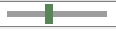

Praktikum 7: Klassen und Objekte I
In diesem Praktikum werden wir Klassen und Objekte in Java einsetzen und praktisch anwenden.
🚀 Lernziele
Sie können:
- Klassen korrekt definieren
- Objekte auf Basis definierter Klassen initialisieren bzw. instanziieren
- Attribute von Objekten mit Konstruktoren initialisieren
🤔 Vorbereitung
Bitte bearbeiten Sie die folgenden Aufgaben vor Ihrem Praktikumstermin. Diese sollen sicherstellen, dass Sie die gestellten Praktikumsaufgaben inhaltlich und zeitlich schaffen.
- Definition von Klassen: Wiederholen Sie bitte die Definition von Klassen (siehe Vorlesung 7 #11) und schauen Sie sich bitte die Vorlesungsbeispiele dazu nochmal an.
- Point-Klasse: Schauen Sie sich das Vorlesungsbeispiel zur Punkt-Klasse noch einmal an. Implementieren Sie diese hier als Point-Klasse, so wieder in der Vorlesung eingeführt inkl. der Distanz-Methode. Bringen Sie bitte den Code (digital!) mit zum Praktikum. Hinweise zum Speichern und Laden von Code finden Sie im Einführungspraktikum.
📝 Pflichtaufgaben
Bitte lösen Sie alle der folgenden Teilaufgaben mit JOE.
1 - Ausbau der Point-Klasse
In der Vorbereitungsaufgabe haben Sie bereits die Point-Klasse angelegt. Wir werden diese nun weiter ausbauen und praktisch einsetzen.
Teilaufgaben:
- Zufällige Koordinaten: Definieren Sie eine Methode random() für die Klasse Punkt. Prüfen Sie nochmal genau, wie Methoden in Klassen angelegt werden. Die Funktion random(double minX, double maxX, double minY, double maxY) bekommt die Intervallgrenzen (min/max für x und y) übergeben und hat keinen Rückgabewert. Stattdessen sollen den beiden Koordinaten (Attribute der Punkt-Klasse) die Zufallswerte zugewiesen werden.
- Konstruktor mit Koordinaten: Definieren Sie einen Konstruktur für die Point-Klasse, der zwei double-Parameter für x und y erhält.
- Konstruktor ohne Parameter: Definieren Sie einen Konstruktur, der keine Parameter erhält und die x- und y-Koordinaten mit 0 initialisiert.
- Konstruktor mit Point-Parameter: Definieren Sie einen weiteren Konstruktor, der als Parameter ein Point-Objekt erhält. Stellen Sie sicher, dass die übergebenen Koordinaten (von Point) korrekt übernommen werden.
- draw()-Methode: Definieren Sie eine Methode draw(), die den Punkt auf der Zeichenfläche von JOE darstellen soll. Das können Sie - wie schon in den vorhergehenden Übungen - mit der Circle-Klasse und einem kleinen Radius umsetzen.
- Point-Objekt: Legen Sie zum Testen ein Point-Objekt mit zufälligen Koordinaten an und geben Sie diesen mit draw() aus.
2 - Bewegte Kreise
In dieser Aufgabe werden wir einen Kreis definieren und diesen durch Aufruf von Methoden über den Bildschirm bewegen.
Teilaufgaben:- Kreis-Parameter: Definieren Sie bitte Variablen für die Parameter unseres Kreises, den Start-Punkt (Mittelpunkt) und die Größe (Radius).
- Kreis-Objekt anlegen: Legen Sie bitte ein Objekt der Klasse Circle an, der mit den zuvor festgeleten Parametern initialisiert wird. Stellen Sie sicher, dass Sie eine Referenz (Variable) auf den Kreis anlegen, damit wir später damit weiter arbeiten können.
- Kreis bewegen: Die Circle-Klasse verfügt über die Methode moveTo(double x, double y). Rufen Sie diese auf und bewegen Sie den Kreis zunächst an eine andere Position. Beachten Sie den Hinweis dazu auch.
- Zufallspositionen: In einer Schleife soll der Kreis nun 10 Mal an unterschiedliche Positionen bewegt werden. Die Koordinaten sollen mittels Math.random() zufällig bestimmt werden. Achten Sie darauf, dass der Kreis vollständig im Fenster bleibt (siehe auch: letztes Praktikum)
Hinweis
JOE bietet Möglichkeiten, die Ausführungsgeschwindigkeiten von Programmen zu kontrollieren. Das bietet sich insbesondere bei animierten Funktionalitäten an.
Geschwindigkeitsregler: Wenn Sie den Regler

nach links verschieben, wird die Programgeschwindigkeit reduziert, in die andere Richtung wird sie erhöht.Systemfunktion: Sie können auch die eingebaute Funktion SystemTools.pause(int milliseconds) nutzen, um das Programm gezielt zu pausieren. Die Zeit wird in Millisekunden angegeben, z.B. 1000 für 1 Sekunde.
⭐ Zusatzaufgaben
Hinweis: Für den Bonuspunkt reicht es, eine der folgenden Aufgaben zu lösen.
3 - Erweiterung und Nutzung der Point-Klasse
Aufbauend auf Aufgabe 1 werden wir die Point-Klasse erweitern und in einem kleinem Programm nutzen.
Teilaufgaben:- Array für Point-Objekte: Legen Sie ein Array für n=10 Punkte an. Nutzen Sie hierfür den new-Operator.
- Instanziieren von Point-Objekten: Initialisieren Sie mit Hilfe einer Schleife n=10 Punkte (Point-Objekte) mit zufälligen Koordinaten.
- Mehrdimensionales double-Array: Legen Sie ein Array für n * n double-Werte an. Nutzen Sie hierfür den new-Operator für beide Dimensionen (siehe Hinweis).
- Paarweise Distanzen: Bestimmen Sie mit Hilfe der distance-Methode, die Distanz jedes Punkts zu allen anderen. Speichern Sie die Distanzen im zuvor angelegten Array ab.
Hinweis
Sie können in Java ein mehrdimensionales Array initialisieren, indem Sie dem new-Operator die gewünschte Größe für jede Dimension übergeben.
Das folgende Beispiel initialisiert ein int-Array mit 3 * 5 Werten: int[][] values = new[3][5];
4 - Ball-Simulation
Aufbauend auf Aufgabe 2 wollen wir nun einen herunterfallenden und abprallenden Ball mit Hilfe eines 2D-Kreises simulieren.
Anforderungen:- Aufgabe 2: Alle Anforderungen aus Aufgabe 2. Der dort definierte Kreis soll uns hier als Ball weiter dienen.
- Ball fällt: Von der Startposition soll der Ball zunächst nach unten (bis zum Fensterrand) fallen. Nutzen Sie dafür bitte die Funktion move(double dx, double dy), die als Parameter die Verschiebung des Balls/Kreises von der aktuellen Position um dx Einheiten auf der x- und dy Einheiten auf der y-Achse erhält.
- Ball bleibt im Spielfeld/Fenster: Achten Sie darauf, dass der Ball (Kreis) vollständig sichtbar bleibt.
- Ball prallt vom Boden ab: Sobald der Ball am unteren Fensterrand ankommen ist, soll er wieder abprallen und 10 Pixel unterhalb der letzte Startposition (vor dem Fall) stoppen und wieder herunterfallen.